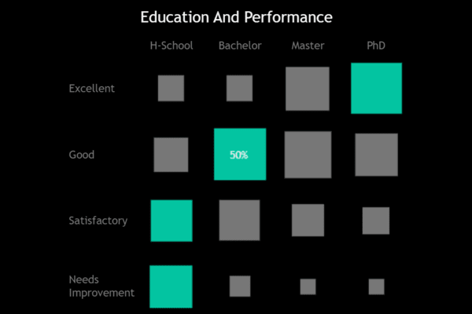
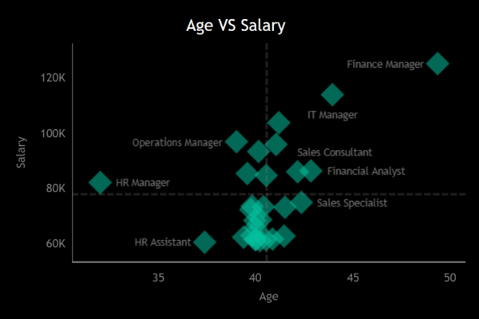

About the Project
The HR Dashboard project offers a deep dive into employee metrics with two dashboards: HR | Summary and HR | Detailed. It provides actionable insights into workforce trends, geographic distribution, demographics, education-performance correlation, age-salary relationships, and detailed employee data for strategic HR decision-making.
GitHub RepositoryEmployee Status Trends
Track the number of employees hired, active, and terminated over time.
Helps in understanding workforce fluctuations, identifying peak hiring or termination periods, and planning HR interventions accordingly.
Geospatial Distribution of Employees
Visualization of employee locations on a map.
Provides a clear view of geographic distribution, aiding in decisions about office locations, remote work policies, and regional hiring strategies.

Demographic and Educational Insights
Analysis of employee demographics (e.g., age, gender) and educational attainment.
Assists in understanding workforce composition, diversity, and educational backgrounds, which can inform training and development programs.

Correlation Between Education and Performance
Examination of how educational levels impact performance metrics.
Helps in assessing the effectiveness of educational qualifications on employee performance, guiding recruitment and training strategies.
Age vs. Salary Analysis
Relationship between employee age and salary levels.
Provides insights into salary distribution across different age groups, highlighting potential areas for salary adjustments or career development opportunities.
Detailed Employee Directory
Comprehensive list of employees with job roles, departments, and locations.
Facilitates detailed analysis of individual employee data, improving HR's ability to manage personnel, track performance, and support career planning.